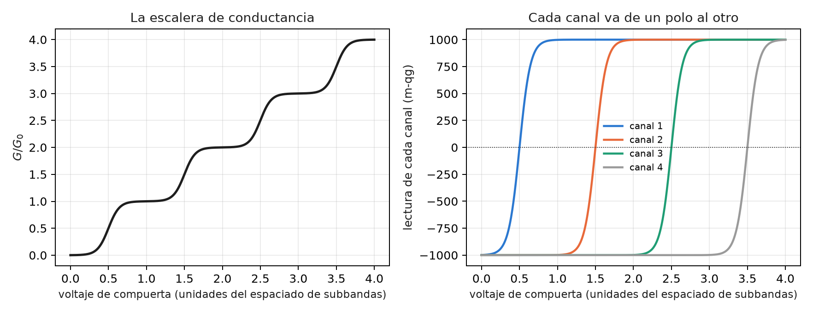
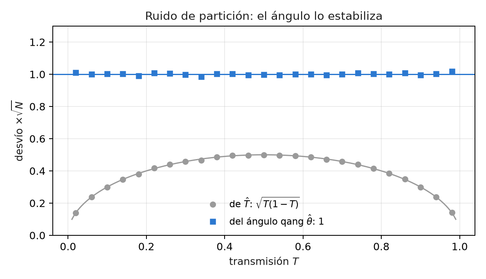
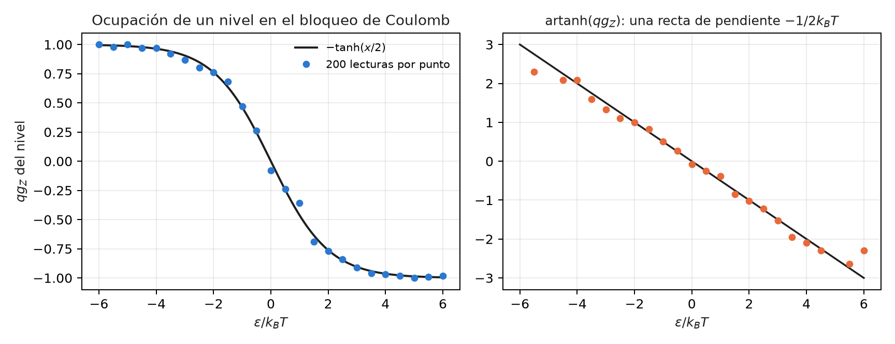

33 Nanocuántica: transmisión, ruido de partición y qubits a escala nanométrica
En la escala nanométrica, muchas cantidades medibles son una probabilidad: la de que un electrón atraviese una barrera, la de que un nivel esté ocupado, la de que un espín esté arriba. Este capítulo las lee con la ecuación del capítulo 1. No hay sección de las notas ni módulo de qang para estos temas, así que cada cifra sale de una fórmula cerrada o de un Monte Carlo escrito en tools/make_cap33_figures.py. Al lado de cada lectura con qang va la forma usual, y se dice cuándo la escala aporta algo y cuándo sólo cambia la notación.
33.1 Desde la base: una probabilidad por experimento
La ecuación del capítulo 1 pide una probabilidad \(p_0\) y da cuatro lecturas exactas:
\[ \theta = 2\arccos\sqrt{p_0},\qquad qg_Z = 2p_0-1,\qquad qg_S = H(p_0),\qquad m = 2000\,p_0 - 1000\ \text{m-qg}. \]
En este capítulo \(p_0\) es, según el caso, la transmisión \(T\) de un canal, la ocupación de un nivel o la población de un estado de espín. Dos propiedades del capítulo 1 hacen todo el trabajo:
- la lectura en m-qg es lineal en la probabilidad: 1 m-qg es siempre \(\Delta p_0 = 0{,}0005\);
- el ángulo estabiliza el ruido binomial: con \(N\) cuentas, \(\sigma_\theta = 1/\sqrt N\) para cualquier \(p_0\), mientras que \(\sigma_{p_0} = \sqrt{p_0(1-p_0)/N}\) cambia con \(p_0\).
33.2 La transmisión por túnel como probabilidad qang
Un electrón llega a una barrera rectangular y la atraviesa con probabilidad \(T\). Con \(p_0 = T\):
\[ \theta_T = 2\arccos\sqrt T,\qquad \cos(\theta_T/2) = \sqrt T = |t|. \]
El medio ángulo qang es el módulo de la amplitud de transmisión \(t\). No es una analogía: es la misma definición, y el script la comprueba a \(10^{-16}\). Con una barrera de 1 eV, un electrón de 0,5 eV (\(\kappa = 3{,}62\) nm⁻¹) y la fórmula exacta de la barrera rectangular:
| ancho | \(T\) | lectura | \(\theta_T\) |
|---|---|---|---|
| 0,2 nm | 0,616 | +231,9 m-qg | 76,6° |
| 0,5 nm | 0,101 | −797,3 m-qg | 142,9° |
| 1,0 nm | 2,85·10⁻³ | −994,3 m-qg | 173,9° |
| 1,5 nm | 7,62·10⁻⁵ | −999,85 m-qg | 179,0° |
- Sin qang se grafica \(\ln T\), que cae con pendiente \(-2\kappa\).
- Con qang, la distancia angular al polo, \(\pi - \theta_T \approx 2|t|\), cae con pendiente \(-\kappa\): el script mide −3,620 nm⁻¹ contra −3,623. Es la amplitud en vez de la probabilidad, la misma información.
- Las barreras gruesas viven pegadas al polo. Un nanómetro deja la lectura a 5,7 m-qg del polo, y un nanómetro y medio, a 0,15 m-qg. Para leer esa diferencia con el error de una cuenta de electrones hace falta el ángulo exacto cerca del polo (capítulo 1), no la aproximación lineal.
33.3 La fórmula de Landauer: un canal, una lectura
La conductancia de un conductor balístico es \(G = G_0\sum_n T_n\), con \(G_0 = 2e^2/h\). Escrita en qg:
\[ \frac{G}{G_0} = \frac{N}{2} + \frac{1}{2}\sum_{n=1}^{N} qg_n . \]
El script usa el modelo de punto de silla de un contacto puntual cuántico, \(T_n = 1/(1+e^{-2\pi(V-n-1/2)/w})\), y comprueba la identidad a \(9\cdot10^{-16}\):
- Cada meseta es un conjunto de canales en los polos: abiertos en +1000 m-qg, cerrados en −1000. En \(V = 1, 2, 3\) la conductancia vale exactamente 1, 2 y 3.
- Cada escalón es un canal que cruza el ecuador. El punto medio del escalón es la lectura 0 m-qg de ese canal.
- La conductancia sola no separa canales que se abren a la vez: da \(\sum T_n\) y nada más. El ruido de disparo (sección siguiente) da \(\sum T_n(1-T_n)\). Con las dos, dos canales parcialmente abiertos se recuperan exactamente: el script parte de \(T = 0{,}4031\) y \(0{,}9716\) y los recupera iguales. Es la técnica conocida para medir las transmisiones de un contacto atómico. En qg, la conductancia lee el \(qg\) medio de los canales y el ruido lee el \(qg^2\) medio.

33.4 Ruido de partición: la varianza binomial, estabilizada
Cada electrón que llega al canal pasa o rebota: es un ensayo de Bernoulli con probabilidad \(T\). De ahí sale el ruido de partición, \(S = 2eI(1-T)\), con factor de Fano \(F = 1-T\). En qg, \(T(1-T) = (1-qg^2)/4 = \sin^2\theta/4\): es la varianza binomial del capítulo 1. El script cuenta 1000 electrones por ventana, en 20 000 ventanas:
- El factor de Fano medido como varianza sobre media de los electrones transmitidos coincide con \(1-T\) a 0,02 o menos.
- Sin qang, el desvío de \(\hat T\) por \(\sqrt N\) va de 0,14 a 0,50: depende de lo que se mide, y cerca de los polos la barra de error se achica tanto que engaña.
- Con qang, el desvío del ángulo \(\hat\theta\) por \(\sqrt N\) queda entre 0,985 y 1,009 para \(T\) entre 0,05 y 0,95, y sigue en 1,01–1,02 en 0,02 y 0,98. La barra de error es la misma en todo el rango.
Es la transformación arcoseno, conocida en estadística desde hace mucho. qang no la inventa. Lo que aporta es que el ángulo estabilizado es la coordenada natural del estado.

33.5 Bloqueo de Coulomb: la ocupación de un nivel
En un punto cuántico con bloqueo de Coulomb, un nivel a energía \(\varepsilon\) del potencial químico de los contactos está ocupado con la probabilidad de Fermi \(f = 1/(1+e^{x})\), con \(x = \varepsilon/k_BT\). Con \(p_0 = f\):
\[ qg_Z = 2f - 1 = -\tanh(x/2). \]
Es el mismo estado térmico que \(qg_Z = \tanh(\beta h)\) del capítulo 8, con el signo de la convención. El script lo comprueba a \(2\cdot10^{-16}\). La pendiente en el centro, \(-1/(2k_BT)\), es un termómetro: un sensor de carga lee la ocupación y su ancho da la temperatura del electrón. Con 25 puntos de \(\varepsilon\), 200 lecturas por punto y 400 repeticiones (\(k_BT = 1\)):
| método | \(k_BT\) estimado |
|---|---|
| ajuste de Fermi por máxima verosimilitud (sin qang) | 0,9986 ± 0,0294 |
| recta por \(\operatorname{artanh}(qg_Z)\) (con qang) | 1,0294 ± 0,0305 |
qang pierde acá. La recta es cerrada y no necesita un ajuste no lineal, pero tiene un sesgo de +2,9 %. En las colas, \(\operatorname{artanh}\) amplifica el ruido de las lecturas cerca de ±1 (se ve en la figura), y los puntos con todas las lecturas iguales hay que descartarlos. El ajuste de Fermi usa la misma información sin sesgo. La lectura qg sirve para ver el termómetro, no para estimar con él.

33.6 Qubits de carga y de espín en puntos cuánticos
Un qubit de espín en un punto cuántico se lee con un sensor de carga: el espín se convierte en carga y el sensor decide 0 o 1, con errores \(e_0 = P(1\,|\,0)\) y \(e_1 = P(0\,|\,1)\). Es la misma lectura que la de un transmón, y la regla del capítulo 28 la describe en m-qg:
\[ m_{\text{leída}} = (1 - e_0 - e_1)\,m + 1000\,(e_1 - e_0). \]
El script simula una oscilación de Rabi con \(e_0 = 0{,}02\) y \(e_1 = 0{,}08\) (valores ilustrativos) y 2000 lecturas por punto:
- la identidad afín vale a \(2\cdot10^{-13}\);
- sin corregir, la oscilación tiene una amplitud de 898 m-qg en vez de 1000 y está corrida +60 m-qg. Su error cuadrático medio es de 95,5 m-qg;
- corregida con los dos polos (2000 lecturas en cada uno), el error baja a 19,4 m-qg. El precio es que el ruido crece \(1/(1-e_0-e_1) = 1{,}11\) veces;
- la fidelidad de lectura usual, \(1-(e_0+e_1)/2 = 0{,}95\), es en m-qg una visibilidad de 900 m-qg y un corrimiento de 60.
La corrección es la estándar. Escribirla en m-qg la vuelve una cuenta lineal: cada punto de error de lectura cuesta 10 m-qg de visibilidad.
33.7 Centros NV: el contraste como presupuesto de m-qg
Un centro NV en diamante se lee por fluorescencia: el estado \(m_s = 0\) brilla más que \(m_s = \pm1\), con un contraste \(C\). Si \(p_0\) es la población de \(m_s = 0\) y \(N_b\) los fotones que daría el estado brillante, la cuenta es poissoniana con media \(N_b\,[1 - C(1-p_0)]\), y la lectura de \(p_0\) en m-qg tiene
\[ \sigma_m \approx \frac{2000}{C\sqrt{N_b}}\ \text{m-qg}. \]
- Con \(C = 0{,}3\) y 444 444 fotones, la fórmula da 10,00 m-qg. El Monte Carlo da 9,22, igual que la fórmula sin aproximar (el factor \(\sqrt{1-C/2}\) en \(p_0 = 1/2\)).
- Resolver 10 m-qg cuesta unos 444 000 fotones. Un contraste de 0,3 hace que cada m-qg cueste once veces más fotones que si el contraste fuera 1. Es el mismo presupuesto del capítulo 1 con un factor \(1/C^2\).
- Magnetometría por ODMR. Una línea de 1 MHz de ancho, contraste 0,2, 61 frecuencias y 1,16 millones de fotones en total. El ajuste de la línea da el centro con un desvío de 8,3 kHz, igual a la cota de Cramér–Rao (8,3 kHz). Son 296 nT con \(\gamma = 28\) GHz/T.
El ajuste de la línea no cambia con qang. Lo que la escala agrega es la cuenta previa: cuántos fotones pide una resolución dada, en una unidad lineal en la población del espín.
33.8 Sin qang y con qang
| tema | sin qang | con qang | diferencia |
|---|---|---|---|
| túnel | \(\ln T\), pendiente \(-2\kappa\) | \(\cos(\theta_T/2) = \lvert t\rvert\); \(\pi-\theta_T\) con pendiente \(-\kappa\) | la amplitud a la vista; la misma información |
| Landauer | \(G/G_0 = \sum T_n\) | \(N/2 + \sum qg_n/2\); mesetas en los polos | conductancia = \(qg\) medio, ruido = \(qg^2\) medio |
| ruido de partición | barra de \(\hat T\): 0,14 a 0,50 (\(\times 1/\sqrt N\)) | barra de \(\hat\theta\): 0,985 a 1,009 | constante en todo el rango (transformación arcoseno) |
| termometría | ajuste de Fermi: 0,9986 ± 0,029 | recta en artanh: 1,029 ± 0,031 | qang peor: +2,9 % de sesgo |
| lectura de un espín | 95,5 m-qg de error sin corregir | 19,4 corregida con los polos | la corrección estándar, escrita lineal |
| NV | contraste y fotones | 444 000 fotones para 10 m-qg con \(C=0{,}3\) | un presupuesto en unidades de población |
| ODMR | 8,3 kHz por ajuste | lo mismo | ninguna |
Balance. En la nanocuántica la escala acierta en el lenguaje: transmisiones, ocupaciones y poblaciones son probabilidades, y qang las lee todas igual. Aporta poco más:
- la barra de error constante del ángulo, que es la transformación arcoseno;
- el medio ángulo como amplitud de transmisión;
- presupuestos lineales en m-qg.
En el único caso en que compite como estimador, la termometría, pierde contra el ajuste de máxima verosimilitud. Todo es cálculo y simulación: ninguna cifra de este capítulo viene de un experimento. Tampoco hay todavía un módulo de qang para estos temas.
33.9 En código
import numpy as np
from qang import probability as PB
T = 2.85e-3 # barrera de 1 nm (tabla de arriba)
PB.milliqang_from_p0(T) # -994,3 m-qg
np.cos(PB.theta_from_milliqang(PB.milliqang_from_p0(T)) / 2) # 0,0534 = sqrt(T) = |t|33.10 Resumen
- La transmisión por túnel es una probabilidad qang, y su medio ángulo es el módulo de la amplitud: \(\cos(\theta_T/2) = |t|\).
- En la fórmula de Landauer cada canal es una lectura qg: las mesetas son canales en los polos y los escalones, canales que cruzan el ecuador. Con la conductancia y el ruido se recuperan dos canales abiertos a la vez.
- El ruido de partición es la varianza binomial; el ángulo qang la estabiliza en \(1/\sqrt N\) en todo el rango.
- La ocupación de un nivel es \(qg_Z = -\tanh(x/2)\); como termómetro, la recta en artanh tiene un sesgo de +2,9 % que el ajuste de Fermi no tiene.
- La lectura de espines por sensor de carga y la de centros NV por fluorescencia se escriben como presupuestos lineales en m-qg; sus estimadores no cambian.
Notas bibliográficas
La conductancia como transmisión es Landauer (1957) y Büttiker (1986); para transporte mesoscópico en general, véase Datta (1995). El ruido de disparo es Blanter y Büttiker (2000), y el factor de Fano, Fano (1947). El bloqueo de Coulomb es Beenakker (1991); los espines en puntos cuánticos, Hanson et al. (2007), y su lectura en un disparo, Elzerman et al. (2004). El centro NV es Doherty et al. (2013), y la sensibilidad de ODMR, Dréau et al. (2011). Las notas de investigación numeradas (§) que cita el capítulo y los scripts que lo verifican están en el repositorio (Monteverde 2026a); la definición de la unidad qang, en Monteverde (2026b).